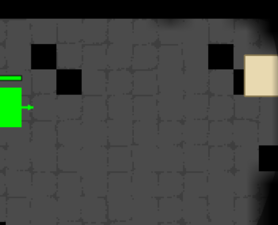
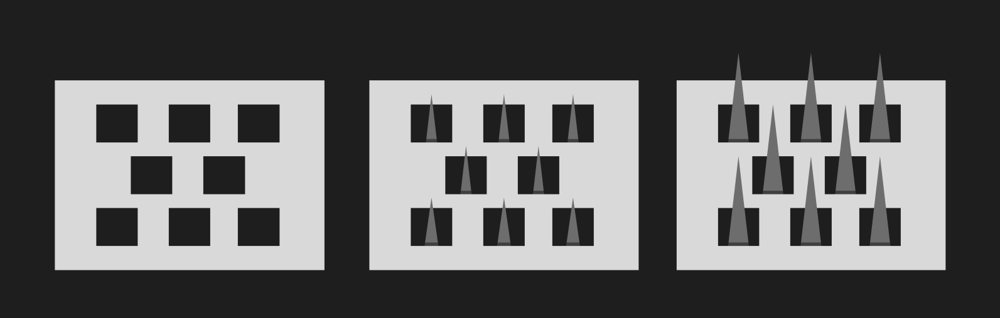
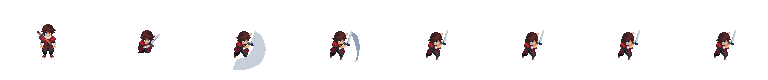
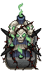
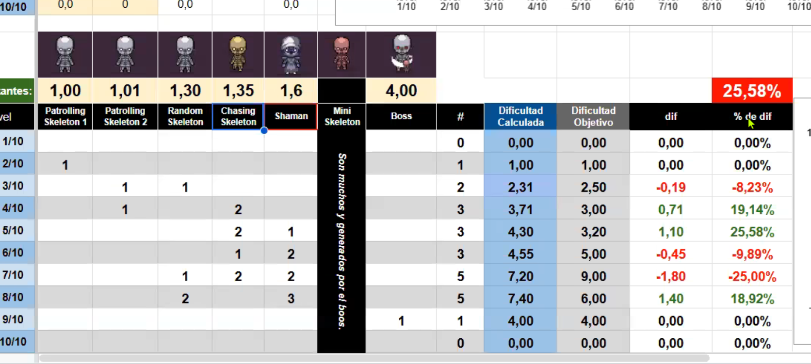

Introducción
Son las 00:32 del 3 de agosto. Llevo toda la tarde trabajando en el Editor de Mapa, sala por sala: coloco antorchas, muevo trampas de pinches, ajusto dónde aparece cada esqueleto. Cierro la sesión conforme. La abro de nuevo para seguir.
Los cambios no están. Nada de lo que hice quedó guardado.
Una tarde entera de trabajo, la que iba a dejar la Sala 1 lista, desaparecida.
"Bueno, lo voy a tener que hacer todo de vuelta, se me borró todo... Necesito que esto se guarde."
Franco, 3 de agosto de 2026, 00:32
Escribí ese mensaje en caliente. No fue solo bronca, fue el quiebre que terminó obligando a construir, en las semanas siguientes, un sistema de guardado confiable. Todavía no sabía que el mismo problema me iba a volver a afectar veinticuatro horas después, con una causa completamente distinta.
Para entender cómo llegué a esa noche tengo que retroceder bastante más. Hasta antes de que "La Cripta de Nekkman" existiera, incluso hasta antes de saber que iba a hacer un juego.
Capítulo 1La carpeta de trabajo
Todo esto arranca el 24 de junio, casi un mes antes de escribir la primera línea del juego. Ese día le pedí a Claude que E:/Curso fuera la carpeta donde iba a guardar todo lo referido a la materia de Diseño de Videojuegos en Image Campus.
"guarda todo esto, vas a ser la carpeta donde guarde todo lo referente a mi curso de Diseño de videojuegos... ese es el Goal de este chat."
Franco, 24 de junio de 2026, 22:28
Esa carpeta terminó siendo la base de conocimiento de la que iba a tirar semanas después para justificar cada decisión de diseño. En las semanas siguientes proceso tres libros de referencia (*Level Up!* de Scott Rogers, *The Art of Game Design*, *In Pursuit of Better Levels*) a Markdown, con 738 imágenes catalogadas. Transcribo las clases 1, 2, 4, 5, 7, 8 y 9. Reviso 65 links citados en clase para saber cuáles seguían vivos.
En paralelo corre el TP1: el rediseño con framework MDA de un juego de cartas de un compañero, "Indies Wars", que convierto en "Keeping Trending" con temática de influencers y redes sociales. Entrega formal el 10 de julio.
El 17 de julio llega la clase que terminaría siendo la base matemática de todo el proyecto: la clase de balanceo de niveles del profesor Eduardo "Ero" Ortega. Curva de Wundt, neurotransmisores, cohortes de skill. La trabajo en una sesión de apuntes separada de la del juego, y no la voy a aplicar en serio hasta dos semanas más tarde.

La curva de dificultad en diente de sierra, anotada esa misma noche de clase. La base teórica que iba a usar recién semanas después.
El 31 de julio lo dejo anotado, como una nota para más adelante:
"todavía no tocamos la Cripta con esto, pero lo vamos a usar más adelante."
Franco, 31 de julio de 2026, 19:44
Guardaba la teoría para usarla después. Resultó que "después" fue casi al final de todo.
Capítulo 2Cambio de idea
El 14 de julio a las 18:48 escribo el prompt que termina arrancando todo lo demás.
"Estaba pensando en armar un juego plataformero, tengo poco tiempo para desarrollarlo e iba a hacerlo vibecode... un jugador que le gusten las experiencias rápidas y plataformeras... la experiencia total, de 3 niveles, tiene que durar un aproximado de 15m de juego... puede haber una historia, de hecho quiero que la haya."
Franco, 14 de julio de 2026, 18:48
Un plataformero. Así lo pensé al principio. Menos de dos horas después cambio de idea sobre la arquitectura técnica, y esa decisión se sostiene durante todo el proyecto:
"va a ser un topdown, que se pueda correr en la web."
Franco, 14 de julio de 2026, 20:33
Ese mismo día subo la Clase 5, la de Documentación y Preproducción, y empiezo a armar con ayuda de Claude un cuestionario de preguntas basado en los frameworks vistos en clase, para no llegar a la preproducción del TP2 improvisando. Todavía no tenía nombre para el juego. Solo la certeza de que iba a ser topdown, que iba a correr en un navegador, y que quería que tuviera historia.
Capítulo 3El formulario de preproducción
El 18 de julio, en menos de quince horas (de las 00:00 a las 14:44), nacieron y se descartaron tres versiones completas de formulario de diseño hasta llegar a un pipeline que funcionaba de punta a punta.
Arranqué a la medianoche con un formulario propio, escrito de memoria, mezclando conceptos de varias clases. A las 12:10 del mediodía subí el PDF real del *Preproduction Blueprint* de Alex Galuzin, el libro que terminaría siendo la estructura formal del GDD, y me di cuenta de que lo armado a la madrugada no estaba alineado con el método real. Lo descarté. Armé dos plantillas manuales más, con placeholders que tampoco llené nunca a mano. A las 13:48 armé un formulario HTML de doce pasos (los once del Blueprint más un paso extra para el Beat Chart), y a las 14:44 tenía la versión que iba a usar de verdad.
A las 16:11 descargué el JSON con todas mis respuestas. Un minuto después, un script en Python lo convirtió automáticamente en el GDD final y en el primer Beat Chart. Ese pipeline (formulario, JSON, script, documento) es la pieza de la que más orgulloso estoy de toda la preproducción, aunque tuvo una rama que no funcionó: dos scripts paralelos para generar versiones en Word con más estilo tenían un bug de nombres de clave (buscaban `narrativa_what` cuando el JSON real decía `storyWhat`) y produjeron un documento con la Narrativa y los Niveles vacíos. Nunca lo corregí.
Capítulo 4El primer prototipo
El código real arranca el 20 de julio. Ya tenía un GDD escrito y un frame de Figma con la idea visual, y a las 20:16 le pido a Claude que lo vuelva jugable.
"la rana es el personaje principal, el esqueleto es el enemigo que me quiere hacer daño y los bloques grises más oscuros son pozos que si toco me quemo."
Franco, 20 de julio de 2026, 20:16
La rana nunca llegó a implementarse. El jugador arrancó siendo un rectángulo verde liso, que en los comentarios del código quedó apodado "Yamel", nombre que lo acompañó durante casi dos semanas. Tres minutos después de ese primer prompt ya pedía algo que se iba a repetir en casi todas las sesiones siguientes:
"no puedo jugarlo, corrélo en un servidor para poder caminar."
Franco, 20 de julio de 2026, 20:19

El primer prototipo jugable: un rectángulo verde moviéndose entre bloques grises. El código, en sus comentarios, ya lo llamaba "Yamel".
El 21 de julio es el día de mayor densidad de mecánicas nuevas de todo el proyecto. En una sola sesión aparecen el combate direccional, la corrección de las reglas de daño ("no debería recibir daño a menos que la criatura me ataque"), el sistema de trampas, y a las 12:15 nace la pestaña "Controles/Editor". Esa pestaña se convirtió en la herramienta más importante de todo el desarrollo: el Editor de Parámetros. Meses después, prácticamente cada ajuste de balance, cada luz, cada mapa, iba a pasar por ahí.
A las 14:17 defino los tres tipos de enemigo: esqueleto normal, tanque y mago, cada uno con su propia IA y sus propias estadísticas.

La referencia visual del enemigo Tanque, descargada en ese mismo período.
A las 19:05 subo el primer sprite real del juego: la caminata del Esqueleto Normal, dibujada a mano en cinco PNG sueltos. Es, hasta hoy, la única pieza de arte propia de todo el proyecto.


Dos de los cinco frames de la caminata dibujada a mano, el único arte 100% propio de todo el proyecto.

Los esqueletos ya patrullaban las salas, aunque todavía no reaccionaban bien al ver al jugador (26 de julio).
Los días siguientes fueron menos prolijos de lo que suena resumido así. El 25 de julio empiezo a exigir rendimiento en serio:
"Necesito que vuele este juego. Es un juego muy simple, tiene que andar muy rápido y muy bien."
Franco, 25 de julio de 2026, 20:33
No pedía fps de más porque sí: en un topdown, si el juego no responde al instante se nota en cada movimiento. El 26 de julio aparece un bug de texturas (el piso, en ciertas condiciones, se llenaba de cuadraditos negros) que ya había pedido resolver más de una vez, sin éxito.

El primer reporte de los cuadraditos negros en el piso, esa misma noche del 26 de julio, 23:17.
Diecinueve minutos después:
"¿Volvieron a quedar en el suelo de los cuadraditos negros? Flaco, te pedí por favor que me lo saques. ¿Qué carajo estás haciendo?"
Franco, 26 de julio de 2026, 20:36

La captura que acompañó ese reclamo. El bug seguía ahí, tan visible como la primera vez.
El bug de los cuadraditos negros nunca tuvo una causa definitiva. Se investigaron y descartaron seis hipótesis distintas (sprite mal recortado, alfa rota, un bug real de datos verificado celda por celda) hasta llegar a la conclusión de que probablemente era caché del navegador.

Un día después, el 27 de julio, el bug seguía ahí. Se resolvería casi de casualidad, como parte de otro arreglo.
Ese mismo 27 de julio pasó algo que en su momento no até del todo. A las 19:50 reporto que el juego, apenas lo abro en Chrome fuera del preview de Claude Code, se queda cargando eternamente.
"NECESITO QUE ANDE IGUAL DE FLUIDO EN UN NAVEGADOR DE LO QUE ANDA EN LA VISTA PREVIA DE ACA."
Franco, 27 de julio de 2026, 19:50
Seis minutos después aparece en el proyecto una carpeta nueva: `vendor/`. Resulta que Phaser, el motor del juego, se cargaba desde un CDN externo sin minificar (5,4 megabytes de golpe, bloqueando la carga). Pasarlo a un archivo local lo resolvió. Mirando el repositorio completo después, es el fix técnico más determinante del proyecto: sin ese cambio, el juego no cargaba fuera del entorno de desarrollo.
Esa misma sesión también integra el primer tileset completo de mazmorra, con niebla de guerra, pathfinding A* y el Editor de Mapa ya funcionando. En una sola noche pasé de un juego con formas de color a algo que ya se parecía a un dungeon crawler.
Capítulo 5Documentar lo real
El 28 de julio actualicé el GDD a una versión que llamé V2. En vez de retocar el documento original para que sonara mejor, escribí exactamente lo que existía: el Nivel 1 marcado como "IMPLEMENTADO Y JUGABLE", con una bitácora de testing que incluye seis bugs reales de motor (un margen de pathfinding que sellaba pasillos enteros, una línea de visión que se bloqueaba contra la propia pared del enemigo, una condición de carrera en la niebla de guerra) y sus soluciones.
También incluí una autocrítica: tenía 32 enemigos en un nivel que yo mismo había declarado como "Introducción" (2 de 10 en dificultad), lo cual contradice la curva sawtooth vista en la clase de balanceo. El Beat Chart V2 reescribe los primeros cuatro beats con datos reales del Nivel 1 ya construido, y deja los ocho restantes (Niveles 2 y 3) tal como estaban en la visión de diseño original.
Capítulo 6En línea
El 30 de julio a las 22:34 decidí sacar el juego de mi computadora y ponerlo en un lugar donde cualquiera pudiera jugarlo.
"quiero que me ayudes a montar esto de la forma más sencilla y gratis para que ande online."
Franco, 30 de julio de 2026, 22:34
Media hora después hice el primer commit de git del proyecto. En ese momento el HTML del juego ya tenía 7.742 líneas de código, y prácticamente todos los sistemas centrales ya existían: pathfinding, los tres tipos de enemigo, hechizos, ambos editores, niebla de guerra, persistencia básica, cinemática de intro, tres salas diferenciadas. El primer commit no era un esqueleto de proyecto, era casi un juego terminado. Todo ese trabajo previo había quedado invisible para git.
El 2 de agosto llega el deploy a GitHub Pages y, el mismo día, el salto de calidad visual más grande hasta ese momento: un sistema de iluminación dinámica de verdad, con antorchas, la luz propia del jugador y la niebla de guerra separada de la iluminación. A las 12:37 descargo un pack completo de dungeon en pixel art y, antes de aplicarlo, le pido a Claude que lo estudiemos imagen por imagen.

Así se planificó, esos mismos días, la densidad visual de la Trampa de Pinches.
Ese mismo día probé algo que no funcionó: migrar toda la grilla del juego de 32 a 16 píxeles para que calzara mejor con el tileset nuevo. Cincuenta minutos después lo revertí por completo.
Capítulo 7La noche del guardado perdido
Lo que en el momento sentí como "se me borró todo" resultó ser, al reconstruir el proyecto en retrospectiva, dos incidentes distintos con causas técnicas distintas, superpuestos en menos de dos días.
El primero pasó a las 00:32 del 3 de agosto, el que ya conté. En ese momento `game_server.py`, el script que hoy guarda cada cambio del Editor de Mapa directamente en disco, ni siquiera existía todavía. Nació veintiún minutos después, a las 00:53, como respuesta directa a ese incidente. Hasta ese momento la única forma de que algo sobreviviera más allá de una pestaña del navegador era descargar el JSON a mano o usar un permiso de archivo que Chrome podía revocar en cualquier momento.
El segundo episodio fue más sutil, porque ya tenía el servidor funcionando y aun así volvió a pasar. El 3 de agosto a las 13:12 coloco un enemigo nuevo en el mapa y pregunto si quedó guardado. No había quedado. La causa era técnica y verificable: el guardado a disco esperaba 400 milisegundos antes de escribir, un debounce para no saturar el disco con cada micro cambio, y los navegadores frenan esos temporizadores cuando la pestaña pasa a segundo plano. Cada vez que cambiaba de pestaña para hablar con Claude justo después de editar el mapa, ese guardado quedaba pendiente sin completarse.
La prueba de que esto había pasado quedó grabada en los archivos: el backup del config antes del arreglo tiene 109 entidades con timestamp. El config actual tiene 247, incluyendo un bloque entero de edición nocturna que en el backup no existe.
El arreglo, que quedó en el commit `f32da3d` de la madrugada del 4 de agosto, fue directo: colocar, borrar o mover algo en el Editor de Mapa ahora escribe a disco de inmediato, sin esperar. Los sliders de configuración, que sí necesitan ese margen para no saturar el disco con cada arrastre, se fuerzan a guardar de todas formas si detectan que la pestaña se está por ocultar con un guardado pendiente.
El mismo 3 de agosto, en medio de este problema de guardado, también reemplacé la vieja "Pared con Vida" (un rectángulo de color con puntos de vida) por un sistema real de rompibles: barriles, cajas, jarrones, cada uno con su explosión y su sonido al romperse, y reskineé la sierra y la antorcha con arte nuevo.
Capítulo 8El personaje
A las 23:38 del 3 de agosto, todavía en la misma sesión, hice el pedido que iba a cambiar más que ningún otro la cara del juego: aplicar un pack de personaje llamado "Adventurer" recién descargado. Diez minutos después ya tenía dieciséis spritesheets generados: 768 por 80 píxeles cada uno, ocho frames por acción, cuatro acciones (quieto, correr, dos ataques distintos que alternan) en cuatro direcciones. Ciento veintiocho frames en total.


Dos de los 16 spritesheets generados esa noche: correr y atacar, ambos hacia abajo.
Lo que siguió, entre las 23:54 y la 00:52, fue una hora larga de ajustes finos: tres pasadas de escala visual, y una redefinición del hitbox de física a 1x2 celdas (32 por 64 píxeles), desacoplado del tamaño visual del sprite, que terminó siendo bastante más grande (134 por 173). Ese desacople generó un bug real: la trampa de pinches empezó a dañar "desde lejos", porque el chequeo de colisión seguía comparando contra el tamaño visual del personaje y no contra su hitbox real. Se corrigió en el mismo commit.
Todo esto cerró en el commit `f32da3d`, a la 01:13 de la madrugada del 4 de agosto, el segundo commit más grande de todo el proyecto, que además trajo el shader tipo CRT (aberración cromática y líneas de escaneo) y un HUD con sprites de verdad, incluyendo un corazón de vida recortado de dos imágenes de referencia.


La referencia (izquierda) y el resultado final integrado al HUD del juego (derecha).
El antes y el después: de un rectángulo verde apodado "Yamel" a un personaje real.
El rectángulo verde que había sido el jugador desde el primer día de código dejó de existir esa madrugada.
Capítulo 9Klegar
El 4 de agosto es el día de mayor cantidad de commits de todo el proyecto (diez de los quince totales) y el que le dio al juego una identidad narrativa.
A la 01:17 de la madrugada nace el sistema de checkpoints: un objeto invisible, visible solo dentro del Editor, que define en qué punto reaparece el jugador si muere.
A las 11:57 subo dos imágenes y escribo el texto completo de la introducción narrativa: el origen del nigromante Nekkman, su pacto con el dios Talos, el ejército de no muertos que levantó. Ese texto reemplaza el placeholder de diálogo que había estado ahí desde el primer commit.


Las dos láminas de la cinemática de intro: el origen del nigromante Nekkman, y el protagonista frente a la entrada de la cripta.
Entre las 12:08 y las 13:18 el protagonista recibe finalmente un nombre propio: Klegar. El "Yamel" que había vivido escondido en los comentarios del código durante casi dos semanas deja de existir también en el texto.
El resto del día se dedica a detalles: reskin animado de las fuentes de los acertijos (el último asset gráfico que entró al proyecto),

La fuente de los acertijos, el último asset visual que se sumó al proyecto.
audio espacial (los sonidos con una fuente física en el mundo se atenúan según la distancia), un contador de botín máximo por nivel, y feedback visual cuando se golpea algo rompible sin llegar a romperlo. A las 18:52 hago el último ajuste conocido del proyecto: reposiciono al jugador en la Sala 1, limpio texto sobrante del HUD y agrego un botón de mute general. Ese último cambio no llegó a subirse a git.
Capítulo 10La curva de dificultad real
A las 19:12 del 4 de agosto le pido a Claude que liste todas las variables reales del juego (enemigos, hechizos, trampas) para poder construir, por fin, la curva de dificultad que venía trabajando en paralelo desde la clase de Ero tres semanas antes.

La diapositiva real de la fórmula de Normalización Min-Max, aplicada semanas después a los enemigos reales del juego.
El polinomio ponderado se aplica así: cada característica de cada enemigo (vida, daño, velocidad, armadura, rango) se normaliza a una escala de 1 a 10 con la fórmula de Min-Max vista en clase (`Y = a + [(X-Xmin)(b-a)]/(Xmax-Xmin)`), después se multiplica por un peso propio de cada característica, y la suma da la constante de dificultad de ese enemigo. El Esqueleto Tanque salió el más difícil del bestiario (47,76 puntos). El Mago, pese a tener el rango de ataque más largo, salió el más bajo (20,50), porque su vida y su daño son bajísimos.

Una tabla de referencia de un compañero de curso, usada para calibrar el propio sistema de balanceo.
El 6 de agosto, en la sesión de apuntes de clase, subo el CSV de constantes de los enemigos reales y pregunto cómo construir un polinomio de dificultad general del juego completo, sumando los tres polinomios parciales (enemigos, trampas, hechizos) y normalizando el resultado a una escala de 1 a 10.
Los cuatro CSV que salieron de ese proceso (enemigos, trampas, hechizos, curva por nivel) aplican la fórmula con números reales, verificados contra el config del juego. Ahí aparece el hallazgo más honesto de todo el proyecto: la Sala 1, la sala de entrada, la que se supone tiene que ser la más fácil, calculó una dificultad neta de 3.217,75. El Nivel 3, el que en el GDD iba a ser el clímax final del juego, calculó apenas 74,11. La curva prometida en el diseño era ascendente: fácil, media, difícil. La curva que salió de los números reales fue exactamente la inversa.

El polinomio de dificultad real del juego, con los tres sistemas (enemigos, hechizos, trampas) graficados juntos.
No es un error de cálculo, es una consecuencia directa de que el Nivel 3 todavía no se había terminado de construir en ese momento (cero bloques de pared, tres enemigos, ninguna trampa). El propio CSV lo decía en su columna de notas: "Sala prácticamente vacía. Probablemente sin terminar." La columna de "Dificultad Objetivo" (el número que se obtiene jugando de verdad, el paso final del método visto en clase) quedó vacía en las tres filas: calculé la dificultad matemática con rigor, pero nunca llegué a compararla contra la sensación real de jugarlo.
Esos cuatro CSV, la pieza más rigurosa académicamente de todo el proyecto, nunca llegaron a subirse al repositorio de GitHub. Viven solo en la computadora local, igual que el botón de mute.
Capítulo 11El Nivel 3
Esta parte es sobre la semana en la que el Nivel 3 dejó de estar vacío.
Arranca pidiendo algo que no tenía que ver todavía con construir el nivel: que los enemigos dejaran de sentirse marionetas.
"En este pathfinding lo que quiero hacer es que los enemigos no vengan directamente hacia mí sin pensar mucho. [...] El mago, por ejemplo, nunca se acercaría o intentaría acercarse. Si está en rango, va a intentar siempre disparar en rango y va a intentar alejarse del jugador, pero quedarse en rango. [...] El tanque siempre va a ser el que va a querer acercarse al jugador."
Franco, sesión del 9 de agosto de 2026
Antes de tocar código se investigó qué técnica de IA convenía (A* con costo dinámico, steering behaviors, influence maps) y apareció una buena noticia: el juego ya tenía un A* propio armado de sesiones anteriores, no hizo falta sumar ninguna librería externa. Los esqueletos normales aprendieron a flanquear cuando se agrupan demasiado frente al jugador. El mago aprendió a hacer kiting: mantener distancia, retroceder si lo acorralan, disparar solo en el rango ideal. Días después, en la misma línea:
"Los enemigos magos, bajo cualquier concepto, tienen que evitar las trampas de sierra. No quieren jamás caminar por las trampas de sierra los enemigos magos [...] necesito que tengan una especie de memoria a la cual vayan al último punto que me vieron."
Franco, sesión del 12 de agosto de 2026
Los magos aprendieron a esquivar sierras. Todos los enemigos aprendieron a recordar dónde vieron al jugador por última vez, en vez de quedarse plantados si se escondía detrás de una caja.
En paralelo se rehizo buena parte del Editor de Mapa: overlay de hitboxes reales visible solo en modo edición, una variante de puerta horizontal editable, fuentes que por fin se pueden mover y seleccionar (con un panel para escribir la pregunta y las respuestas, marcando cuál es la correcta), mapas de hechizo que se pueden colocar y borrar libremente. La progresión también cambió de fondo: las tres puertas de la Sala 1, que dependían de combinaciones de A+B+C en un mecanismo de "volver a elegir nivel" que ya no tenía sentido, se redujeron a una sola por nivel. Nivel 1, después Nivel 2, después Nivel 3, sin vuelta atrás.
Con todo eso ya andando, llegó lo que le da título a este capítulo: la construcción completa del Nivel 3, sala por sala. Seis salas que arrancan con máxima presión desde la primera (magos y tanques ya esperando, sin rampa de introducción propia), un corredor con tres checkpoints numerados, una sala en cruz con sierras verticales, el pergamino de Bola Mágica escondido, una formación nueva de tanque con un esqueleto escolta, y un combate final que junta todo lo que el juego había ido enseñando por separado. La sala que un mes antes tenía cero bloques de pared y tres enemigos terminó siendo, sala por sala, la más densa de las tres.
Capítulo 12El bug de la puerta
El bug más difícil de encontrar de todo el proyecto no rompía nada visualmente. Al contrario, se veía perfecto.
"cuando cruzo esta puerta no pasa nada, no avanzo hasta el nivel 2"
Franco, sesión del 12 de agosto de 2026
La puerta estaba desbloqueada. El código de la transición, probado a mano llamando la función directo, funcionaba. La fuente había marcado bien la respuesta correcta. Nada de lo evidente estaba roto. Hizo falta abrir un navegador de prueba aparte y teleportar al personaje celda por celda para encontrar la causa real: 73 bloques sólidos invisibles, nunca iluminados porque nunca habían sido alcanzables, tapiaban por completo el corredor entre la puerta y el punto exacto que dispara el cambio de nivel. La puerta se veía abierta. El camino detrás, literalmente, no existía.
Se sacaron los 73 bloques. Para que el mismo tipo de bug no pudiera volver a pasar, se rediseñó la solución:
"move la el bloque verde que representa la puerta al mismo lugar donde esta el trigger que te lleva al level 2"
Franco, sesión del 12 de agosto de 2026
Ahora la puerta y el punto que dispara la transición son el mismo lugar. No hay corredor intermedio que se pueda volver a tapiar sin que se note.
En medio de esa misma revisión apareció otro bug con la misma forma: cuando ninguna de las tres opciones de una fuente queda marcada como correcta, el juego elige la respuesta válida al azar en cada partida, en vez de una fija. Pasaba en la fuente del Nivel 1 y en la del Nivel 2, ninguna de las dos tenía una opción marcada, así que a veces la respuesta lógica valía y a veces no. Se corrigieron las dos.
Con el Nivel 3 ya construido, el GDD se consolidó en una versión final que junta la preproducción original con el estado real del juego terminado, y el Beat Chart se completó con las 18 salas de los 3 niveles.
Estado del proyecto al cierre
Mirando el proyecto entero de una vez, lo que más sorprende no es ninguna mecánica en particular. Es la cantidad de trabajo que pasó antes de que hubiera un solo commit de git: cuando hice el primer commit, el 30 de julio a la noche, el juego ya tenía casi todos sus sistemas centrales funcionando. Semanas de trabajo real habían quedado invisibles para cualquiera que solo mirara el historial de versiones. Eso me hizo entender algo que no tenía tan claro antes de empezar: la documentación y el control de versiones no son un espejo automático del proceso real. Hay que hacer el esfuerzo consciente de que lo sean, y no lo hice hasta bastante tarde.
También aprendí, a las patadas, que el guardado no es un detalle técnico menor sino una decisión de diseño con peso real. Perdí una tarde entera de trabajo una vez, y una noche completa de edición otra vez, por dos razones técnicas distintas: primero, porque no existía ningún sistema de guardado confiable; segundo, porque el sistema que sí existía tenía un supuesto silencioso (que la pestaña del navegador siempre iba a estar activa) que rompía todo el tiempo al cambiar de pestaña mientras trabajaba.
De la parte teórica de la cursada, lo que mejor se terminó traduciendo al juego fue el sistema de luces. La niebla de guerra, las antorchas y las fuentes de los acertijos con su luz separada de todo lo demás son un calco directo de lo visto en la Clase 5 sobre guía implícita: el weenie de Scott Rogers como landmark que atrae desde lejos, la idea de que la luz puede indicar qué es importante sin decir una palabra. Es la conexión más sólida de todo el proyecto entre lo enseñado y lo construido.
En la última semana antes de la entrega el Nivel 3 pasó de ser una sala casi vacía a tener sus seis salas construidas, tan densas como las de los otros dos niveles, y la IA de los enemigos dejó de moverse en línea recta sin variación. El GDD quedó consolidado en una versión final única, con el Beat Chart completo de los 3 niveles.
En los últimos días antes de la entrega se cerraron los pendientes que quedaban: los cuatro CSV de balanceo ya están subidos al repositorio, se corrió el playtesting formal con un número de dificultad percibida por nivel, se cronometró la duración real de los 3 niveles, y el link de Miro del moodboard quedó incluido en el GDD final. Jugando la versión casi terminada un día antes de la entrega también fui notando detalles de jugabilidad para mejorar (timing de algunas trampas, hitboxes de enemigos que no se sienten del todo ajustadas en el cuerpo a cuerpo) que anoté pero no llegué a tocar por tiempo. Queda como aprendizaje para la próxima etapa, no como cambio de último momento sobre esta entrega.
Lo que me llevo de este proyecto
Si tengo que resumir en una idea lo que aprendí en estas seis semanas, es que hacer un juego no se hace solo con instinto. Antes de este proyecto diseñaba en base a lo que sentía que estaba bien, un conocimiento naturalizado de haber jugado muchos juegos, sin poder explicar del todo por qué. Ahora sé que existe un método concreto, y aprender a aplicarlo fue lo más importante de todo el proceso.
El balanceo de niveles funcionó como referencia central: poder entender con números qué partes de un nivel están balanceadas y cuáles no, en vez de guiarse solo por la sensación de "esto se siente difícil", fue una de las herramientas más útiles de toda la cursada. Al mismo tiempo, fue ahí donde más aprendí sobre mis propios límites de tiempo: confié en ese cálculo de papel más de lo que debería durante la mayor parte del desarrollo, y el playtesting en vivo que le tenía que dar sentido a ese número quedó relegado a último momento, en vez de correrse en paralelo desde antes. El tiempo quedó mal distribuido entre desarrollo y testing, y eso es lo que más me llevo para planificar mejor la próxima vez.
Construir toda esta experiencia trabajando junto a un asistente de IA fue, de todas formas, un desafío interesante. Y por encima de cualquier mecánica puntual, lo que más me importa de todo el proceso es haber aprendido los pasos que hay que seguir para diseñar un nivel antes de escribir la primera línea de código. Eso es lo que más me llevo de esta materia.